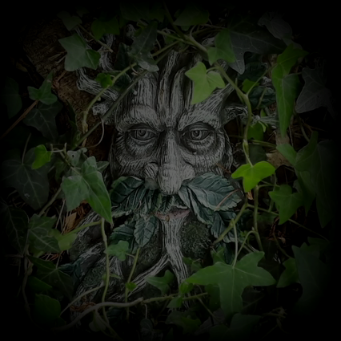

Songsmiths and story tellers. Local history, landscape, folklore and fantasy.
We present our unique songs as a light-hearted journey through time and imagination. From sea to downs and into the clouds.
We are situated in Rowlands Castle, on the Hampshire-West Sussex border. Our performance is tailored to your requirements, with projected backdrop images where possible. We have suitable equipment for most venues & full public liability insurance. Rates are negotiable according to venue and distance from Rowlands Castle.